Oil geopolitical risk at record. Iacoviello's oil-related AI-GPR read 752 in September, far above the 2003 Iraq-war and 2022 Ukraine spikes. Source: https://www.matteoiacoviello.com/ai_gpr.html
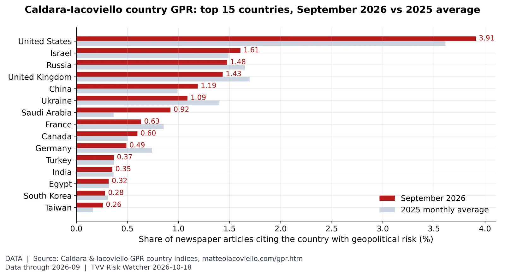
Where geopolitical risk is concentrated. In September 2026, United States (3.91% of articles, vs 3.61% in 2025), Israel (1.61%) and Russia (1.48%) led the Caldara-Iacoviello country GPR rankings. Source: https://www.matteoiacoviello.com/gpr.htm
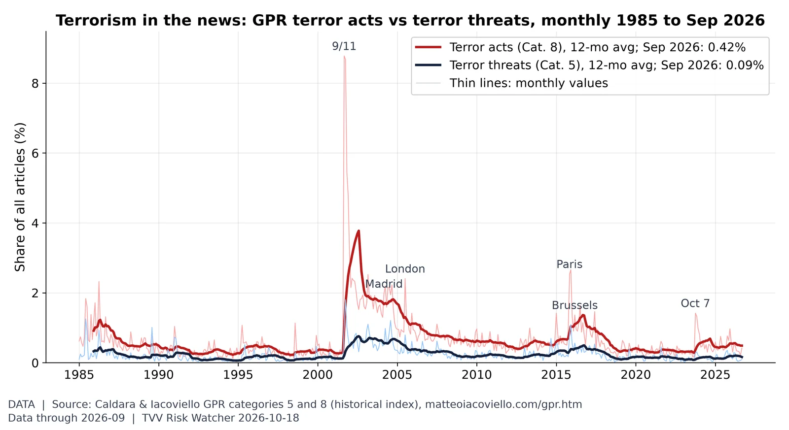
Terror acts vs terror threats. In September 2026, terror-act articles were 0.42% of all articles (2025 average 0.55%) and terror-threat articles 0.09% (2025 average 0.19%), far below the 9/11 peak of 8.8%. Source: https://www.matteoiacoviello.com/gpr.htm
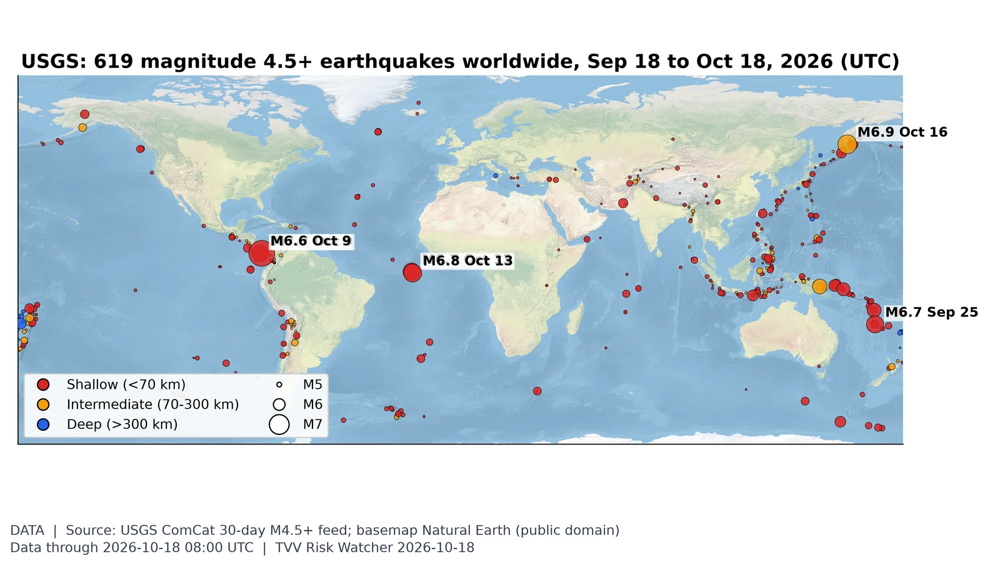
Where the earth shook this month. USGS logged 619 M4.5+ quakes in the 30 days to Oct 18, 12 of them M6+; the largest was M7.7 12 km WSW of Pitaloza Arriba, Panama on Oct 9 (UTC). Source: https://earthquake.usgs.gov/earthquakes/map/
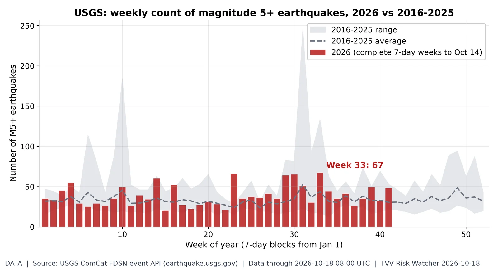
Weekly M5+ quake count. 2026 has 1,597 M5+ quakes through Oct 18 vs a 2016-25 average of 1,379 by this date (range 1,168-1,882); the busiest 2026 week was week 33 with 67. Source: https://earthquake.usgs.gov/fdsnws/event/1/
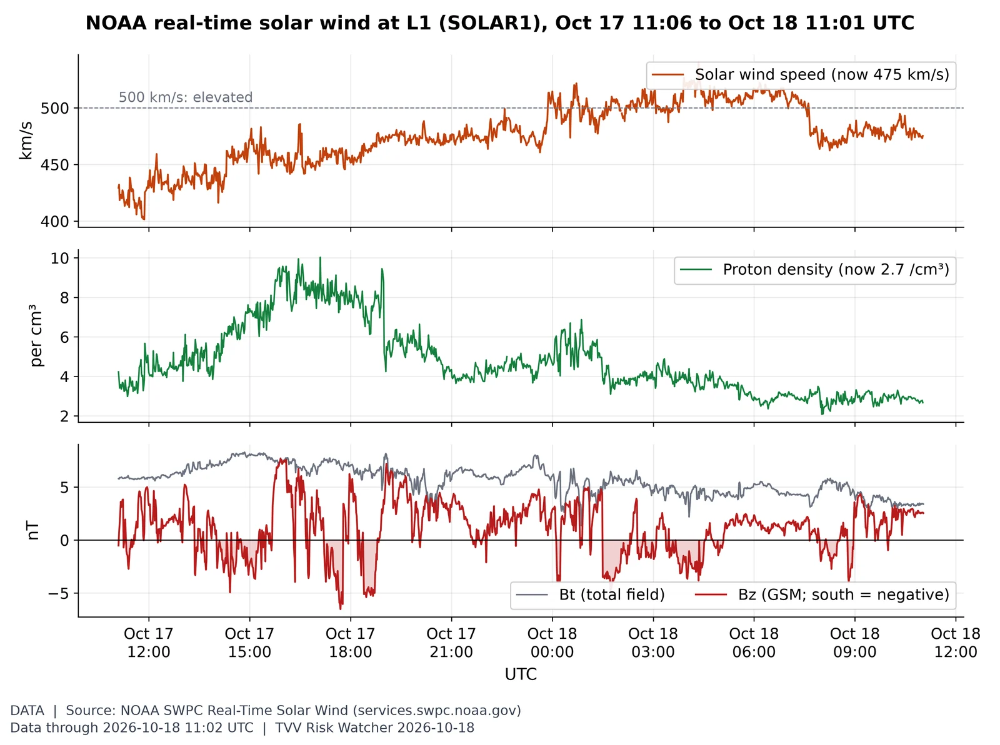
Solar wind right now. Solar wind is 475 km/s (24-hour range 401-540) and Bz is +2.5 nT (24-hour low -6.5 nT), with NOAA forecasting a peak Kp of 5.00 (G1 minor storm) on Oct 20 (forecast issued 2026 Oct 18 0030 UTC). Source: https://www.swpc.noaa.gov/products/real-time-solar-wind
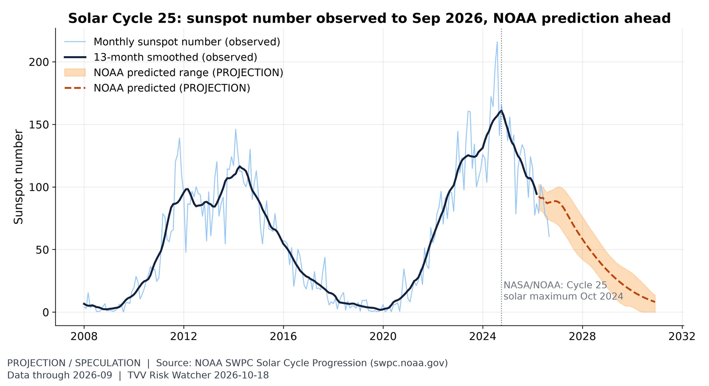
Solar Cycle 25 progression. Sunspots (60 in September) are past peak, but declining phases still bring large flares and CME storms like Oct 10's. Source: https://www.swpc.noaa.gov/products/solar-cycle-progressionNorth magnetic pole drift (measured). North magnetic pole drift, 1900-2025, with WMM2025 forecast to 2030. Data through 2025 (NOAA NCEI NP.xy), retrieved Oct 17, 2026; speeds computed by TVV as great-circle distance between yearly positions. Source: https://www.ncei.noaa.gov/products/wandering-geomagnetic-poles
Yield curve after inversion. The 10Y-2Y spread is back positive at +0.35 after the 2022-24 inversion (Treasury: 10Y 5.09%, 2Y 4.74% Oct 16), the un-inversion phase that preceded past recessions. Source: https://fred.stlouisfed.org/series/T10Y2Y
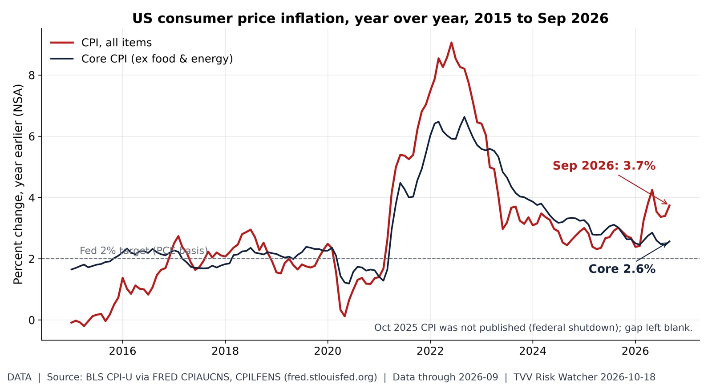
Energy-driven inflation re-acceleration. Headline CPI jumped to 3.7% in September while core sat at 2.6%: an energy-led shock pushing the Fed toward hikes. Source: https://fred.stlouisfed.org/series/CPIAUCNS
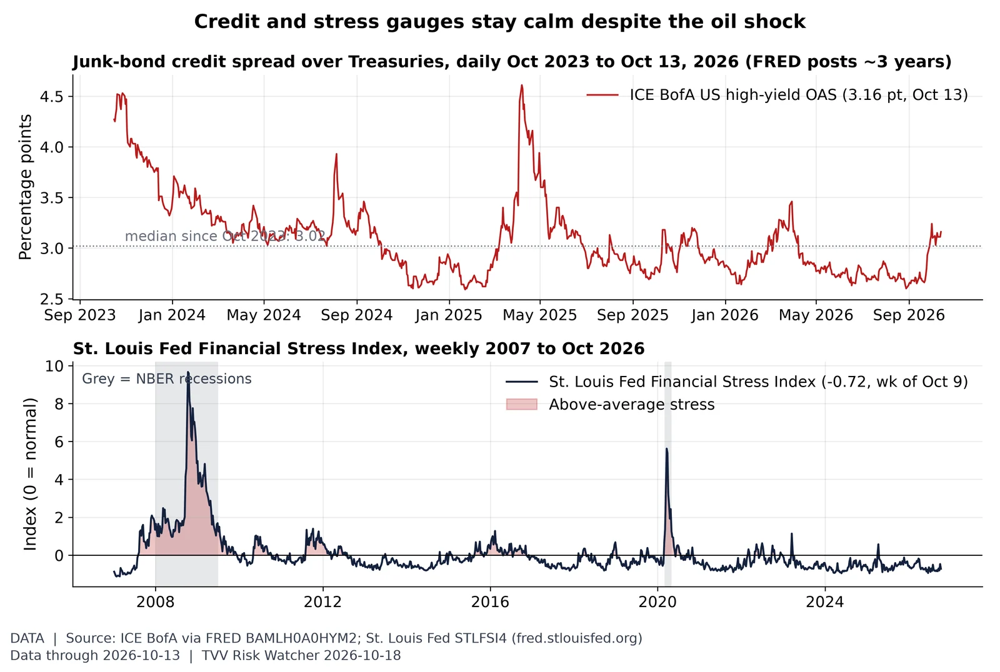
Credit markets: calm, maybe complacent. The high-yield spread was 3.16 pt on Oct 13, well inside its 3-year range (2.59-4.61) and far from stress levels, and the St. Louis Fed stress index read -0.72, below normal and lower than 88% of weeks since 2007: credit is not yet pricing the geopolitical and oil risk. Source: https://fred.stlouisfed.org/series/BAMLH0A0HYM2
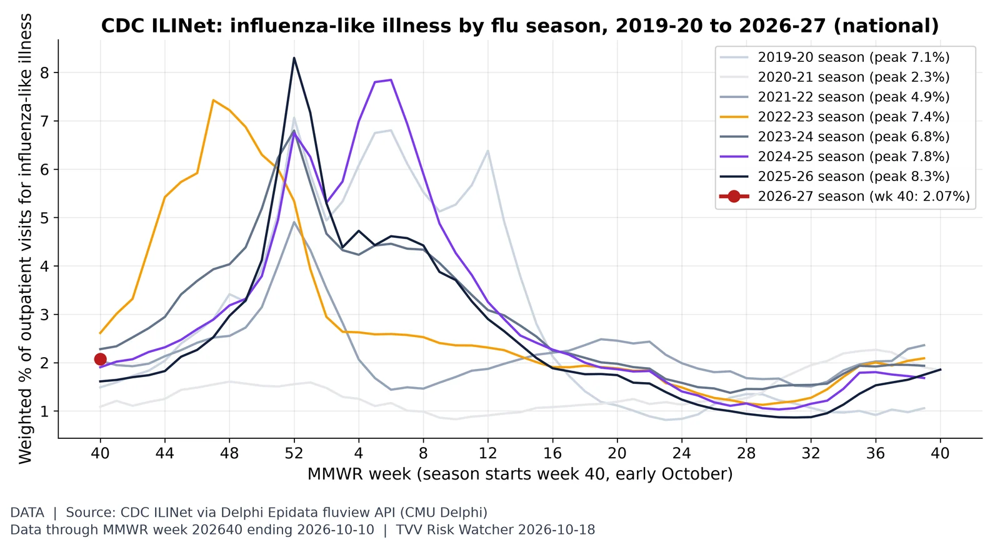
Flu season starting line. The 2026-27 flu season opened at 2.07% of outpatient visits for influenza-like illness in MMWR week 40 (ending Oct 10), vs 1.61% in the same week last season; the 2024-25 season peaked at 7.8%. Source: https://www.cdc.gov/fluview/surveillance/index.html
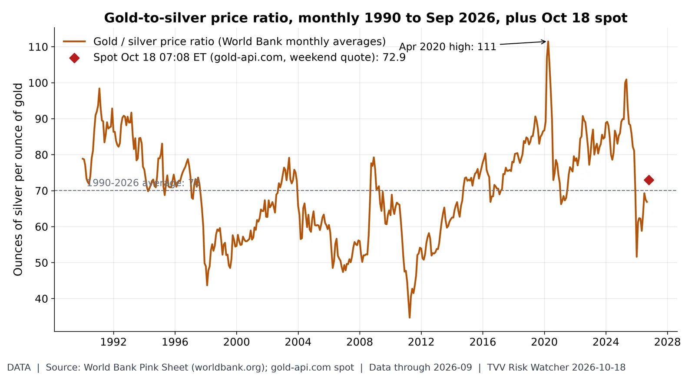
Gold-to-silver ratio. An ounce of gold buys 72.9 ounces of silver at the weekend spot (gold $4,166, silver $57.12), vs 66.9 in September and a 1990-2026 average of 70. Source: https://www.worldbank.org/en/research/commodity-markets
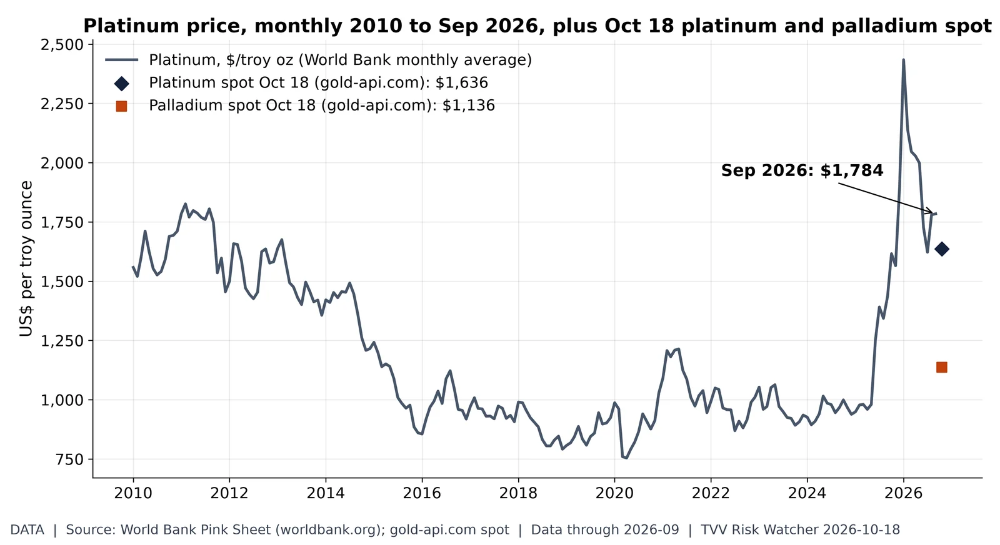
Platinum group metals. Platinum averaged $1,784/oz in September (2010-26 high $2,434, Jan 2026); weekend spot quotes are platinum $1,636 and palladium $1,136. Source: https://www.worldbank.org/en/research/commodity-markets
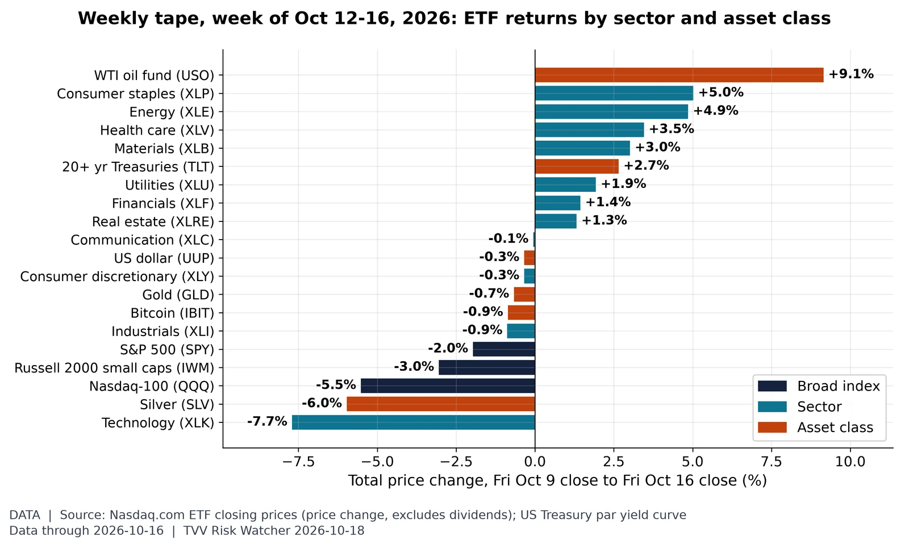
The week by sector and asset class. In the week to Oct 16, the best performer was WTI oil fund (USO, +9.1%) and the worst Technology (XLK, -7.7%), with the S&P 500 ETF at -2.0%; the 10-year Treasury yield moved from 5.24% to 5.09%. Source: https://www.nasdaq.com/market-activity/etf/spy/historical
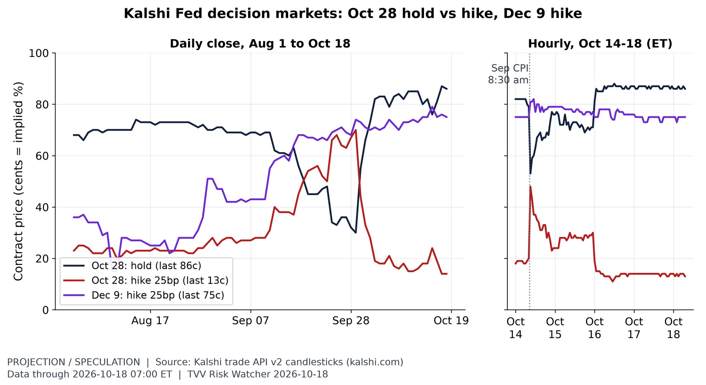
Fed hike odds after CPI. Kalshi's Oct 28 hold trades about 86c early Oct 18, back from its post-CPI dip, while a Dec 9 hike sits near 75c: markets see the Fed waiting until December. Source: https://kalshi.com/markets/kxfeddecision
AI capability scaling. Training compute for notable models keeps compounding roughly 5.8x a year, the scaling engine behind SI-AGI risk. Source: https://epoch.ai/data/ai-models